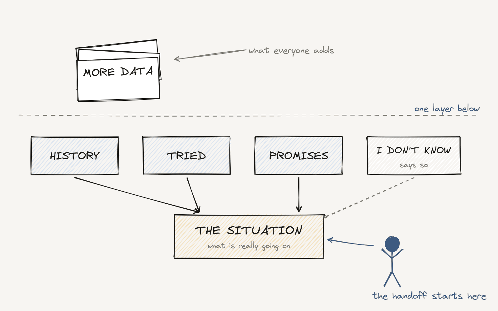

More Data Won't Fix Your AI: Why Context Wins

One of the biggest myths in enterprise AI: give the model more data and it gets smarter.
It doesn't.
An AI assistant can read thousands of documents, records and knowledge articles and still give a bad answer. Because information and context are not the same thing.
A simple example
A customer calls because a problem still isn't fixed.
A basic assistant pulls up the latest case and summarizes it. Fine.
A context-aware assistant asks better questions:
- Has this customer called about this before?
- What have we already tried?
- Did someone promise something?
- Is there an open escalation?
- What policies apply to this customer?
The first assistant tells you what the last ticket said. The second tells you what is actually going on.
Now go back to the Brazil rule. If a customer asks for a human, that person has seconds to understand the situation. Without context, the customer repeats the whole story. That is the moment they decide you don't care.
Context is a design problem, not a data problem
Connecting a model to your data is the easy part. The hard part is:
- picking the right information, not all of it
- understanding how the pieces connect
- respecting who is allowed to see what
- reading it inside the business process, not in a vacuum
And one more, the one most teams skip: knowing what the AI doesn't know.
A good AI experience says "I'm missing the contract terms" or "these two records disagree." A bad one fills the gap with confidence. In customer service, a confident wrong answer costs more than no answer.
In my work on platforms that companies customize, I've learned the same lesson many times: two companies can have the same data and need very different context, because their processes and promises are different. Context is local. That is why "just add more data" never works.
The quality of enterprise AI will depend less on how much it can access and more on how well it understands the situation behind the data.
A good place to start: look at the moment your AI hands a case to a person, and find the one piece of context they always have to go look for. That is the first fix.